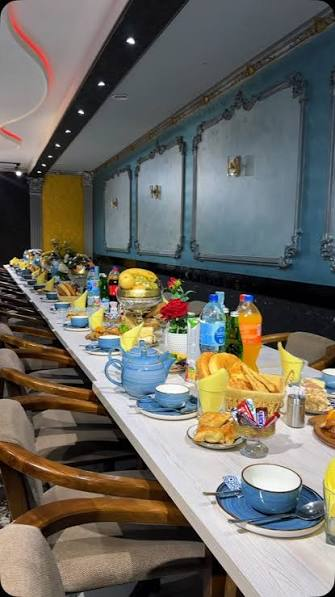
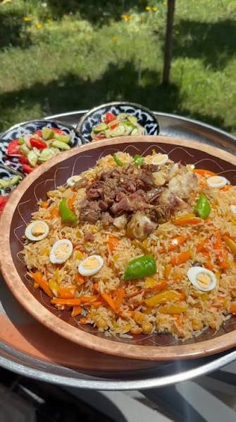
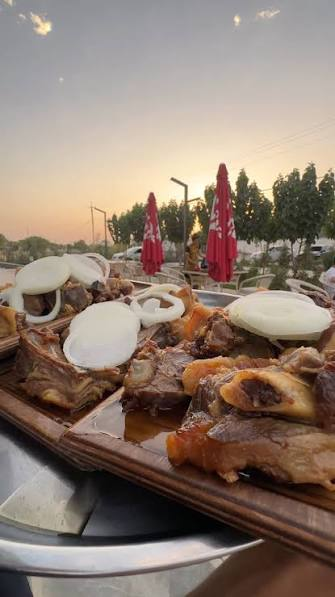

.svg)
taomlarimiz
dunyo restoran barchasi siz uchun
Dunyo restaurant: ta’m olami shu yerda boshlanadi. Har bir taom mohir oshpazlar qo’lida, eng sara mahsulotlardan tayyorlanadi. Shinam muhit, samimiy xizmat va unutilmas ta’m sizni har safar qaytib kelishga undaydi. Oila, do’stlar va tadbirlar uchun eng yaxshi joy: Dunyo restaurant, har kuningiz bayramga aylansin!


kun yarmida mazali osh
Sara guruch, yumshoq mol go’shti, shirin sabzi va xushbo’y zira qozonda sekin damlanib, haqiqiy to’y oshiga aylanadi. Har bir dona guruch bir-biridan ajralib, mazasi og’izda erib ketadi. Issiq non, achchiq-chuchuk salat va ko’k choy bilan birga, bu shunchaki taom emas, dasturxon bayrami. Dunyo restaurantda oshni sinab ko’ring, ta’mi uzoq esingizda qoladi!
ajoyib yumshoq gosht
Dunyo yumshoq go’shti: og’izda eriydigan ta’m. Tanlangan yosh go’sht past olovda soatlab dimlanib, o’z sharbatida pishadi. Piyoz, ziravorlar va sarimsoq uning ta’mini ochib, har bir tishlamni to’yimli va xushbo’y qiladi. Pichoqsiz ham ajraladigan darajada yumshoq, ichi sershira, ustidan ishtaha ochadigan qizg’ish qobiq. Issiq non, yangi salat va garnir bilan, Dunyo restaurantda ta’mini o’zingiz sinab ko’ring!
